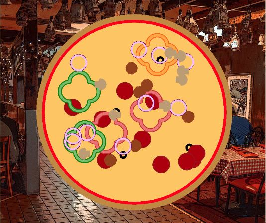
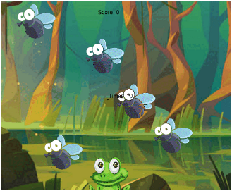
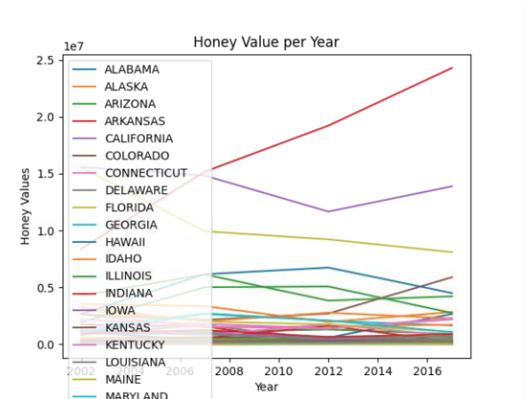
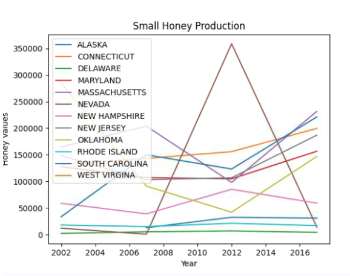

This is Emory's Portfolio Page!

To be continued...
Papa Luigi's Pizzaria

Our game allows the player to create their own unique pizza through a series of prompts. Based on the player's choices, toppings will be randomly distributed across the pizza. Our toppings are a variety of shapes that enable the player to create a unique and interesting pie every time.
Fly Catcher

Our game requires players to click on flies as they move across the screen. The flies are set to move randomly about the screen. For each fly that is clicked on, the player's score will increase by one, and when the timer runs out, their score will be compared to those of other players via a leaderboard.
Hoppy Minion
Our game has the player navigate through a series of levels. Along the way, there are bananas for the player to collect to increase their score and their time is recorded as well.
Making Meaning from Data 3.2.4 Project
 